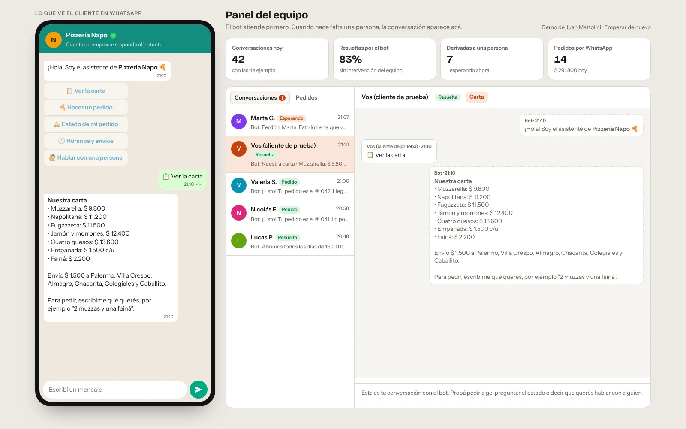
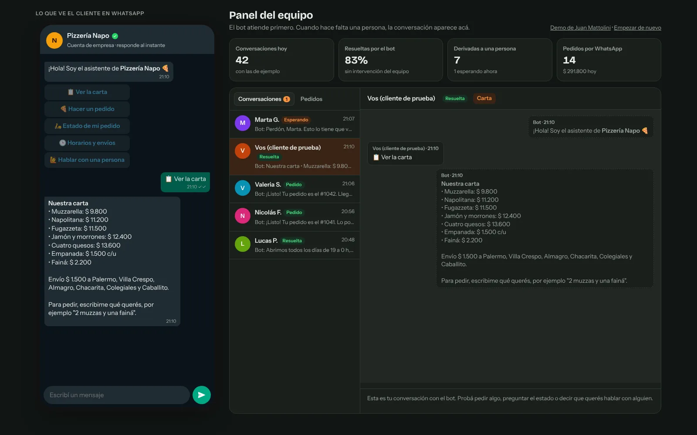
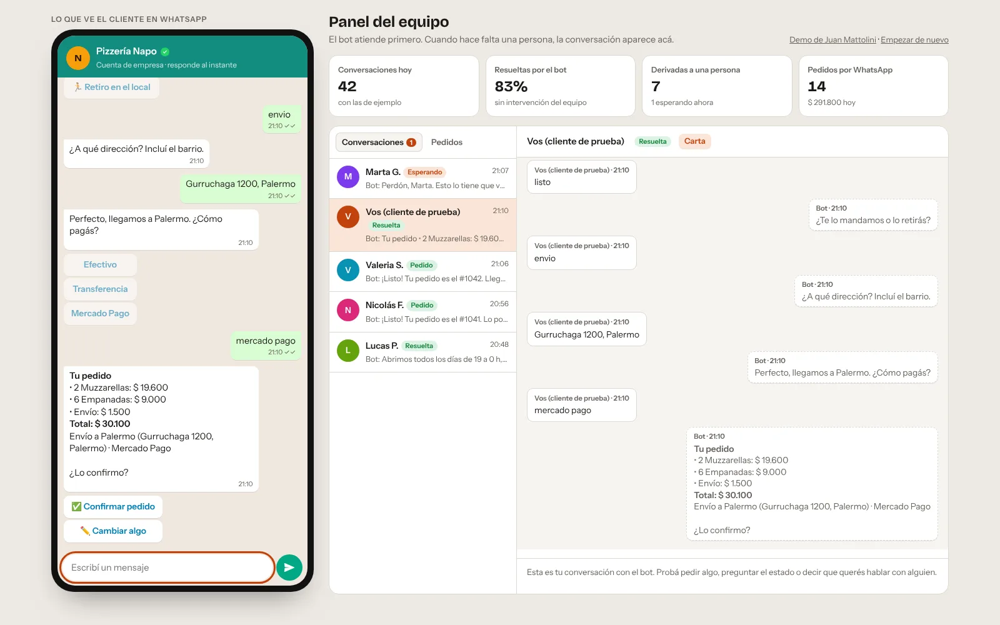
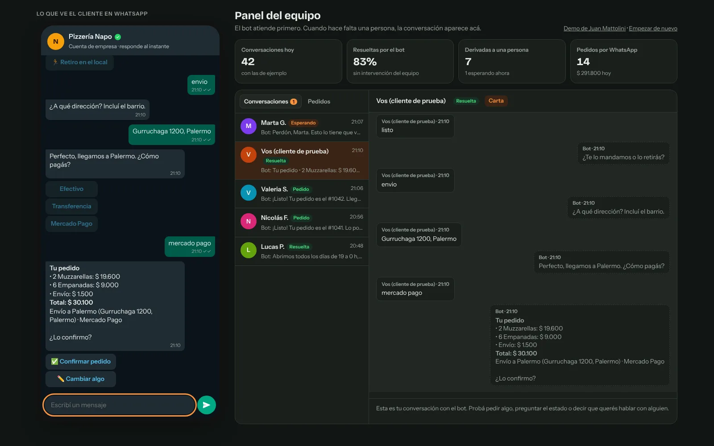
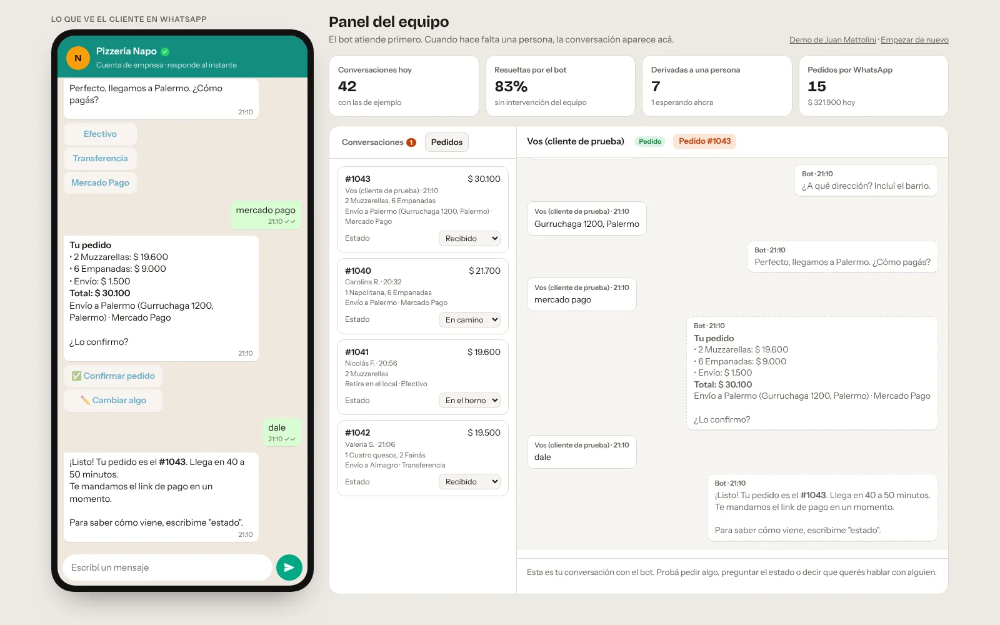
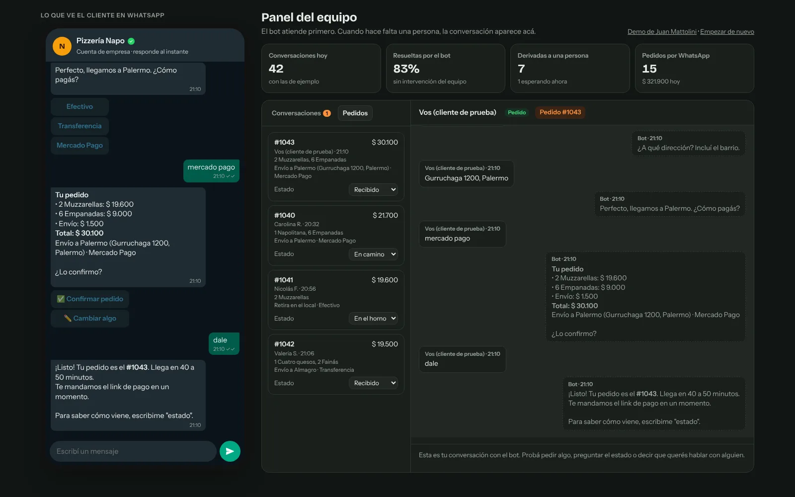
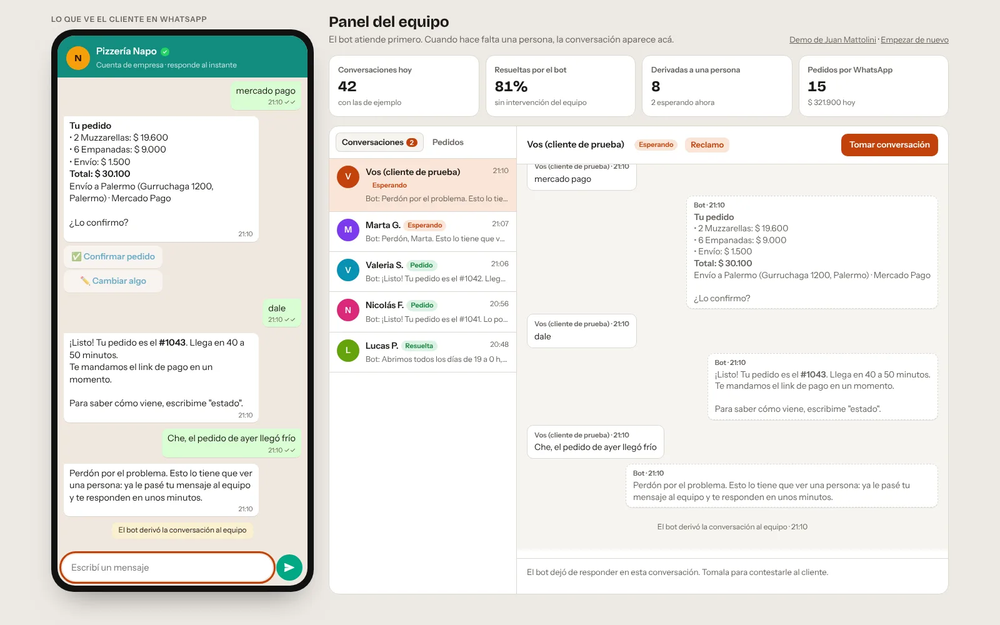
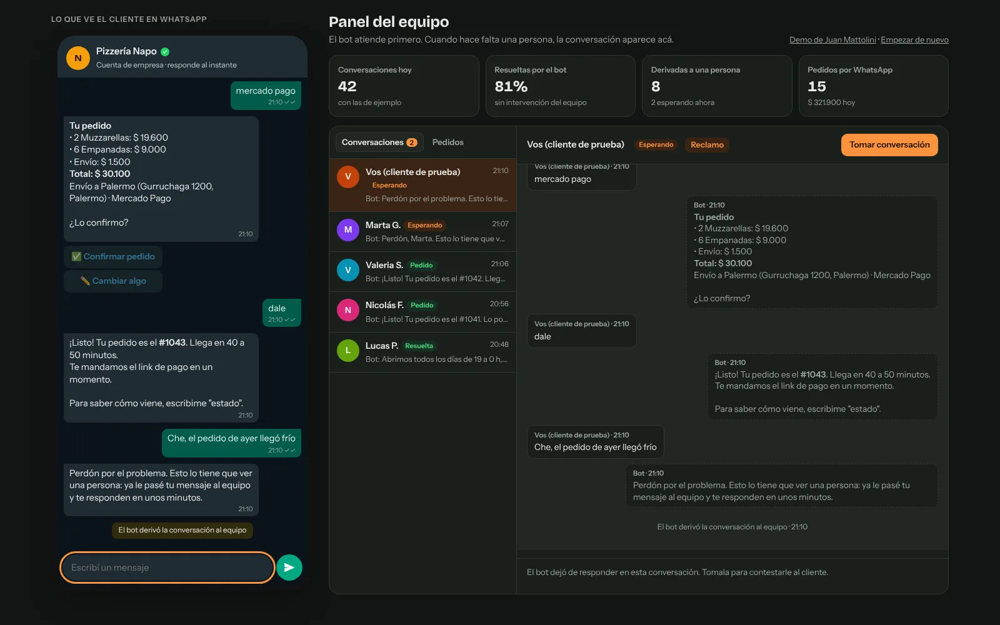
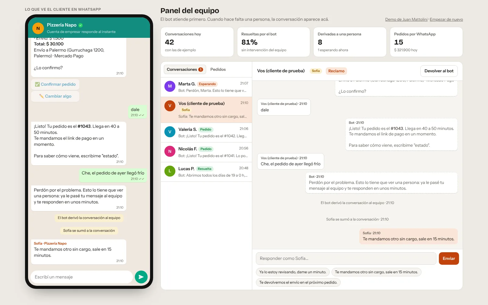
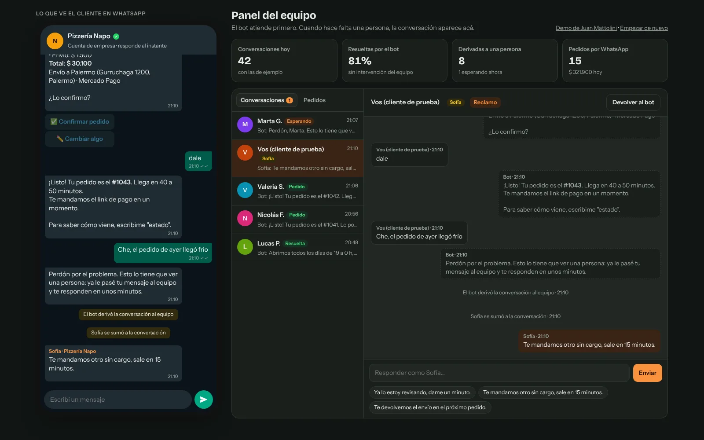

Preguntas frecuentes
Horarios, dirección, zonas y costo de envío, y la carta con precios. Se puede tocar una opción o escribir como uno quiere: "¿hasta qué hora abren?" funciona igual.
Un bot que atiende el WhatsApp de un negocio: responde horarios y precios, toma pedidos escritos como los escribe la gente y avisa cómo vienen. Cuando el cliente tiene un reclamo, pide una persona o el bot no entiende, le pasa la conversación al equipo, que la sigue desde un panel. La demo usa una pizzería ficticia y muestra las dos pantallas lado a lado.










Capturas de la demo con conversaciones ficticias.
Horarios, dirección, zonas y costo de envío, y la carta con precios. Se puede tocar una opción o escribir como uno quiere: "¿hasta qué hora abren?" funciona igual.
Lee productos y cantidades en el mismo mensaje, incluidos "dos", "una" y "media docena". Después pide entrega o retiro, dirección con barrio y medio de pago, y confirma con el total.
Si la dirección está fuera de la zona de envío, lo dice y ofrece retirar.
Con el número de pedido responde en qué está: recibido, en el horno, en camino o entregado. Cuando el local cambia el estado, el cliente recibe el aviso sin preguntar.
Un reclamo, un pedido de hablar con alguien o dos mensajes seguidos que no entiende pasan la conversación al equipo. El bot avisa al cliente y deja de responder.
Las conversaciones que esperan una persona aparecen primero, con el motivo. Se toman con un botón, se responde con frases rápidas o escribiendo y se devuelven al bot al terminar.
Lista de pedidos con su estado, cuántas conversaciones resolvió el bot solo, cuántas pasaron al equipo y cuánto se vendió por WhatsApp.
El cliente
El bot
El equipo
Un bot que insiste cuando no entiende enoja más que no tener bot. Con un reclamo, un pedido de una persona o dos mensajes sin entender, la conversación pasa al equipo en el momento.
Mientras alguien del equipo tiene la conversación, el bot no responde nada. Así nunca hay dos respuestas cruzadas ni el cliente siente que habla con una máquina en medio de un reclamo.
Los botones resuelven lo más común en un toque, pero no son obligatorios. Quien escribe "2 muzzas para retirar" llega al mismo lugar.
Para pedidos, horarios y estados alcanza con reglas claras: son instantáneas, no tienen costo por mensaje y nunca inventan un precio. La IA se puede sumar para preguntas abiertas, con el mismo criterio de derivar cuando no hay certeza.
Antes de crear el pedido el bot muestra cada producto, el envío, el total, la dirección y el medio de pago, y espera un sí.
El panel cuenta qué porcentaje de conversaciones se resolvió sin el equipo y por qué se derivaron las otras. Es lo que dice qué conviene enseñarle al bot después.
Demo desarrollada en octubre de 2026.
¿Tu WhatsApp está lleno de las mismas preguntas? Contame qué te consultan tus clientes.
mattolinijuansebastian@gmail.com